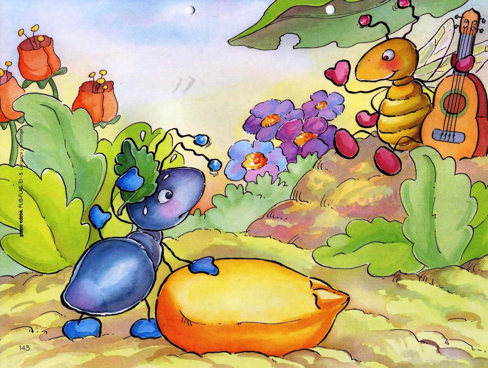

La cigarra era feliz disfrutando del verano: El sol brillaba, las flores desprendían su aroma...y la cigarra cantaba y cantaba. Mientras tanto su amiga y vecina, una pequeña hormiga, pasaba el día entero trabajando, recogiendo alimentos, con otras hormigas. - ¡Amiga hormiga! ¿No te cansas de tanto trabajar? Descansa un rato conmigo mientras canto algo para ti. – Le decía la cigarra a la hormiga. - Mejor harías en recoger provisiones para el invierno y dejarte de tanta holgazanería – le respondía la hormiga, mientras transportaba el grano, atareada. La cigarra se reía y seguía cantando sin hacer caso a su amiga. Hasta que un día, al despertarse, sintió el frío intenso del invierno. Los árboles se habían quedado sin hojas y del cielo caían copos de nieve, mientras la cigarra vagaba por campo, helada y hambrienta. Vio a lo lejos la casa de su vecina la hormiga, y se acercó a pedirle ayuda. - Amiga hormiga, tengo frío y hambre, ¿no me darías algo de comer? Tú tienes mucha comida y una casa caliente, mientras que yo no tengo nada. La hormiga entreabrió la puerta de su casa y le dijo a la cigarra. - Dime amiga cigarra, ¿qué hacías tú mientras yo madrugaba para trabajar? ¿Qué hacías mientras yo cargaba con granos de trigo de acá para allá? - Cantaba y cantaba bajo el sol - contestó la cigarra. - ¿Eso hacías? Pues si cantabas en el verano, ahora baila durante el invierno Y le cerró la puerta, dejando fuera a la cigarra, que había aprendido la lección.